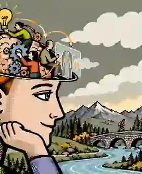

Active Inference
Generative models, POMDPs, message passing, policy precision and adaptive decision-making.
→
Four interconnected perspectives on the mind–body continuum, rendered as one coherent editorial science identity.
Generative models, POMDPs, message passing, policy precision and adaptive decision-making.
→Physiological inference, allostatic regulation, bodily signals and adaptive control.
→Affective charge, empathic interfaces, emotional inference and multimodal AI.
→Embodied interaction, vibrotactile feedback, sonoception and human–machine coordination.
→Conceptual illustrated covers turn each paper or presentation into a recognisable research artifact.
How higher-order beliefs about model fitness can shape precision, policy selection and adaptive behavioural switching.
Stress, adaptive set-points and learning-rate modulation under an active inference framework.
A visual introduction to structured probabilistic inference and reusable computational graphs.
Unifying perception, learning and action under a generative model of behaviour.
Modulating interoceptive pathways through acoustic and vibrotactile stimulation.
Vibrotactile feedback, tactile encoding and closed-loop human–machine interaction.
Multi-level latent representations and hierarchical generative structure for complex observations.
A flexible framework for modelling uncertainty in cognitive and affective processes.
From biological regulation, to affective experience, to belief updating and intelligent action in the world — all connected through a common computational framework.
Explore domains ↑